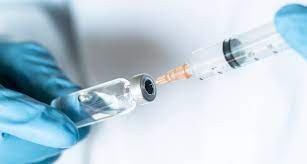
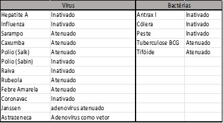
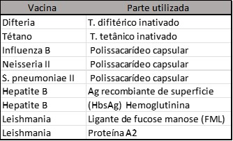
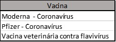
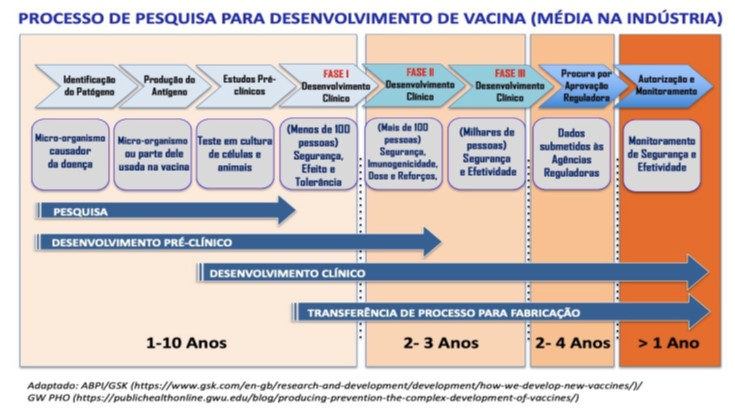

Vacinas - Como as vacinas são feitas?
No início do ano de 2020 o mundo passou um momento dramático: começava uma pandemia onde um novo vírus, sobre o qual, pouco se sabia, infectou milhares de pessoas ao redor do mundo deixando um rastro de mortes e caos. Ficou evidente para a humanidade o quão frágil eram os nossos sistemas de saúde ao redor do mundo e quão falhos eram os planos de contingência (quando existiam) de enfrentamento para uma emergência de tal magnitude
No entanto, também pudemos observar um esforço coletivo, a nível mundial, para que fossem estabelecidos protocolos de atendimento, manejo da doença e de prevenção ao contágio. Uma vez observado que não existiam fármacos disponíveis que possibilitariam o tratamento e/ou prevenção da doença, um esforço de nível global começou na busca por uma vacina
Paralelamente com estes fatos, o que se viu foi que uma crescente onda de desinformação acerca da doença como também uma crescente onda de um movimento chamado anti-vacinas. Esse movimento possui diversas alegações para justificar sua desconfiança em relação às vacinas de um modo geral, algumas relativamente justificáveis como a desconfiança em relação ao tempo relativamente reduzido no qual a vacina foi elaborada, até outras alegações que beiram um estado patológico psicótico curiosas, como a de que seria implantado um chip de monitoramento através da vacinação.
Este artigo busca esclarecer tais questões acerca da eficácia e segurança das vacinas, e com esse objetivo, vamos abordar o surgimento das vacinas, o seu histórico e os métodos mais modernos de produção da vacina.
Histórico
A primeira vacina em 1796, na Inglaterra, resultado dos estudos do médico Edward Jenner. Embora Jenner tenha sido o primeiro a demonstrar a capacidade protetora da vacina com base no rigor médico e científico presentes na época, a prática de imunização já era conhecida no mundo antigo, tendo sido mencionada até mesmo nos textos sânscritos ayurvédicos, datados de 1000 aC. Naquela época de Jenner, a varíola, uma doença com alta taxa de transmissão e de mortalidade também, assolava o mundo. Os estudos de Jenner começaram quando ele observou que os camponeses que ordenhavam vacas não contraíam a varíola, mas sim uma doença com lesões semelhantes que acometia as vacas leiteiras. Essa doença era a varíola bovina, causada pelo cowpoxvirus, um primo do vírus que causa a varíola em humanos, o smallpox. Jenner acreditava que pessoas que contraíssem o vírus da varíola bovina ficariam resistentes a varíola que acometia os humanos e dessa forma resolveu testar sua hipótese. Ele então, inoculou o material proveniente das pústulas de uma camponesa infectada com a varíola bovina, em um menino de 8 anos. Os resultados observados na criança foram febre, dor de cabeça e calafrios, passando após o período de duas semanas e sem maiores complicações. Após a recuperação do menino, Jenner inoculou no menino, o material proveniente das pústulas de uma pessoa infectada com a varíola humana. Como resultado, o menino apresentou uma reação leve e semelhante a varíola bovina, mas sem as complicações que a varíola humana trazia. O nome vacina vem do termo em latim Variolae vaccinae, que quer dizer varíola bovina e que também foi o nome do primeiro livro de Jenner sobre o assunto.
Como a vacina funciona?
Antes de explicarmos o panorama atual e os tipos de vacinas produzidas hoje em dia, vamos entender o que são e como as vacinas funcionam. objetivo da vacina é justamente proporcionar o contato do sistema imunológico com o invasor de uma forma “controlada”, ou seja, fornece as informações sobre o invasor para o sistema imune, mas não permite que o mesmo seja atacado por ele. Promove na verdade uma simulação de ataque, por isso é tão importante. A vacina treina o seu sistema imunológico contra um micro-organismo para caso você se infecte com ele, o seu organismo já saiba como combatê-lo.
Tipos de Vacina
Agora que já vimos como as vacinas funcionam, vamos nos aprofundar nos tipos de estratégias utilizadas para a fabricação das mesmas. Atualmente existem 3 principais abordagens para se desenvolver uma vacina, são elas:
Abordagem do micróbio inteiro (vacinas de 1ª geração)
As primeiras vacinas utilizaram esse tipo de abordagem onde o micro-organismo inteiro era submetido a um processo que os atenuava (enfraquecia) ou os inativava, de modo que eles perdessem seu potencial de atacar ao corpo humano. Mas como isso funciona? tabela abaixo mostra exemplos de algumas vacinas que forma desenvolvidas com essa tecnologia.

Abordagem de subunidade (vacinas de 2ª geração)
Nessa abordagem de desenvolvimento de vacinas, apenas algumas partes do micro-organismo são utilizados e não o micro-organismo inteiro, como na abordagem anterior. A tabela abaixo mostra exemplos de algumas vacinas que forma desenvolvidas com essa tecnologia

Abordagem genética (vacinas de 3ª geração)
Essa abordagem no desenvolvimento de vacinas trouxe uma inovação muito grande em relação as anteriores. Ao invés de utilizar o micro-organismo ou suas partes, ela utiliza somente a informação genética que codifica a subunidade a ser reconhecida pelo organismo. Como assim? Vamos lá! Como explicado no tópico anterior, já foi descoberto o mecanismo que alguns micro-organismos utilizam para invadir a célula. No caso do coronavírus, ele utiliza a proteína spike, que é uma proteína em forma de espícula que o vírus usa para invadir a célula. Para uma proteína ser produzida é necessário que o organismo envie um sinal para o núcleo da célula pedindo “permissão” para fabricar aquela proteína. O núcleo da célula então responde enviando de volta uma mensagem com “a receita” ou “modo de preparo” para que o organismo produza aquela proteína. Essa receita é nada mais que o RNAm que informa como fazer a proteína. tabela abaixo mostra exemplos de algumas vacinas que forma desenvolvidas com essa tecnologia.

Vacina contra o coronavírus
Muitas pessoas fazem questionamentos em relação ao tempo de desenvolvimento da vacina contra a covid, afirmando que não foi suficiente. Outro questionamento comum é em relação aos efeitos adversos das vacinas. Vamos abordar estes temas e trazer esclarecimentos importantes. O tempo de desenvolvimento de qualquer tipo de vacina, ou até mesmo fármacos, é sempre longo, visto que existe uma necessidade de se passar por várias fases de teste e muita burocracia envolvida. O processo para desenvolvimento de vacinas, juntamente com o tempo médio, pode ser visualizado na figura abaixo:

Se compararmos com o tempo demandado para o desenvolvimento da vacina contra o coronavírus é impossível que não cause uma certa estranheza. Mas como isso foi possível? Primeiramente vamos observar novamente a figura, com o foco no primeiro quadrante da figura. Neste quadrante temos as fases de identificação do patógeno, produção de antígeno e estudos pré-clínicos. Por enquanto, deixaremos a fase de estudos pré-clínicos, que consta neste quadrante para posterior explicação. Como é possível observar, essas são as fases que são mais longas e que demandam de mais investimento financeiro também. Com base em tudo que já foi explicado até aqui, chegamos a conclusão que a tecnologia no desenvolvimento de vacinas não é uma coisa nova. A técnica mais moderna que foi utilizada no desenvolvimento da vacina contra o covid teve seu início na década de 1990. Desde então, essa técnica vem sendo aprimorada a tal ponto que quando do início da pandemia, já estavam em andamento vários estudos para vacinas contra outros patógenos que utilizavam a mesma técnica. O que se fez para o desenvolvimento rápido da vacina do covid foi utilizar uma “plataforma” de conhecimento que já havia sido construído e bem consolidado, e utilizar para o coronavírus. O próprio vírus da covid, o SARS-COV-2, surgiu de um vírus anterior que já era bem conhecido e que já possuía vacina. Existia todo um arcabouço de informações para que o desenvolvimento fosse rápido. O fator determinante que poderia impedir isso era o fator financeiro. Porém, como a infecção se espalhou e ganhou status de pandemia, os esforços governamentais de vários países e de iniciativas privadas ao redor do mundo convergiram para um objetivo. Aliados com pesquisadores de várias partes do mundo que trabalharam em colaboração. O mundo viu, talvez pela primeira vez, o poder que o trabalho integrado e colaborativo entre governos, indústrias e cientistas podem trazer para buscar soluções para a humanidade.
E em relação aos efeitos adversos? Como já foi abordado, embora elaborada de maneira relativamente rápida quando comparada com outras vacinas, o desenvolvimento da vacina contra a covid não pulou etapas. Todas as etapas de desenvolvimento foram respeitadas principalmente no que diz respeito a sua segurança. O desenvolvimento de qualquer vacina, assim como o de um fármaco, é feito levando em consideração as características da média da população. Dentro de uma população temos diferentes perfis metabólicos, genéticos e imunológicos, e os fármacos e vacinas desenvolvidas vão abranger a maior parte da população, ou seja, o perfil médio da população. Nesse contexto, algumas pessoas podem, cujo perfil metabólico, genético ou imunológico, estejam muito deslocados da média do perfil da população, podem responder de uma forma mais ou menos exacerbada com relação a resposta a vacina. Isso é de conhecimento geral e inclusive vários estudos são feitos a fim de determinar qual população está apta a utilizar qual tipo de medicamento ou vacina. Não existe nenhum medicamento que não tenha algum tipo de contraindicação, ou que cause eventuais reações adversas em alguma parcela da população. O fator mais importante a ser avaliado é que os benefícios da imunização superam os riscos. Por esse motivo, tantos os medicamentos quanto as vacinas não deixam nunca a fase de vigilância farmacológica (ou farmacovigilância), nela são monitorados todos os casos de reações adversas e de acordo com as ocorrências é avaliado a continuidade da disponibilização da substância para a população.
Referências:
Neufel,P.M. Personagem da História da Saúde XII: Edward Jenner e a origem das vacinas. Revista Brasileira de Análises Clínicas.2021
Feijó RB, Sáfadi MA. Immunizations: three centuries of success and ongoing challenges. J Pediatr (Rio J). 2006;82(3Suppl):S1-3.